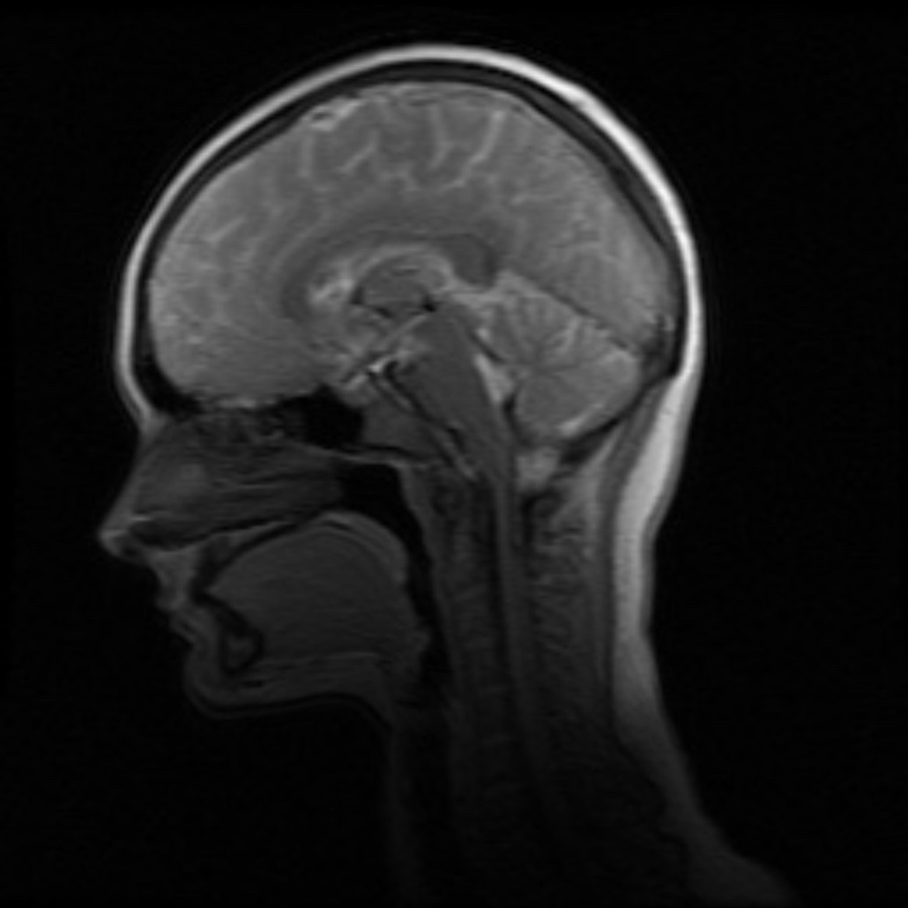

Madison Akles
bio
research
CV
|

prefrontal cortex
who i am (bio)
brainstem
my "history" (CV)
occipital lobe
what i "see" (research)
temporal lobe
auditory processing
(this is my actual brain scan. bc social neuroscience. get it? :-)